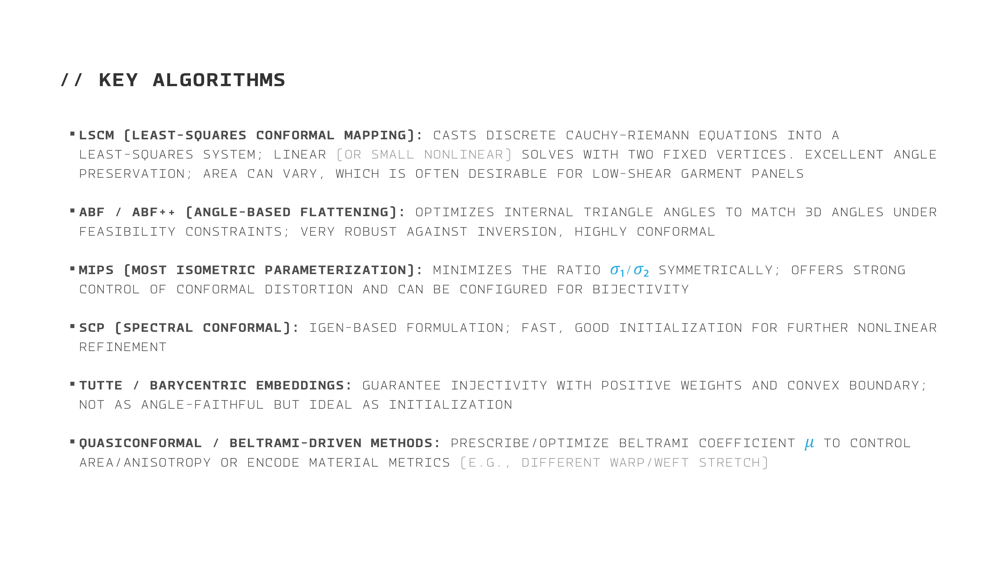
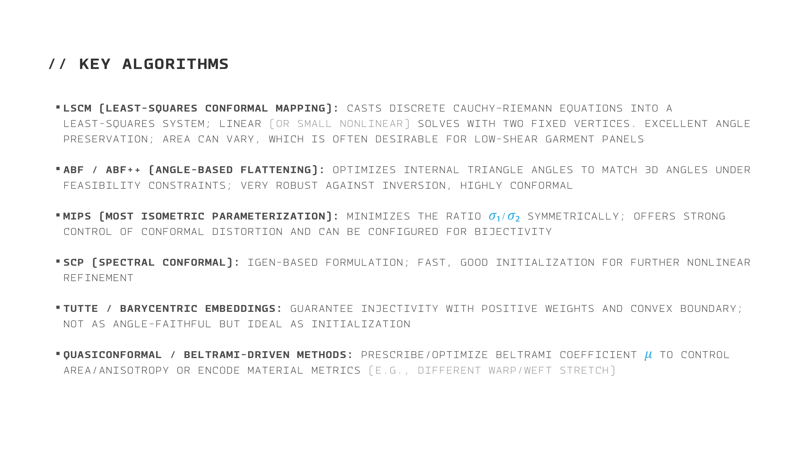

//IPM
I DEVELOPED A NEW PATTERN MAKING SYSTEM CALLED THE ISO-PARAMETRIC PATTERNING METHOD (IPM) THAT USES POLYGONAL MODELING TECHNIQUES AND MATHEMATICAL UNWRAPPING TO CREATE PRECISE, ERROR-FREE PATTERNS
IT ALSO PROVIDES THE ESSENTIAL FRAMEWORK FOR AI-DRIVEN IMAGE-TO-PATTERN SYSTEMS, MAKING FULLY AUTOMATED, INTELLIGENT
PATTERN GENERATION POSSIBLE
 
